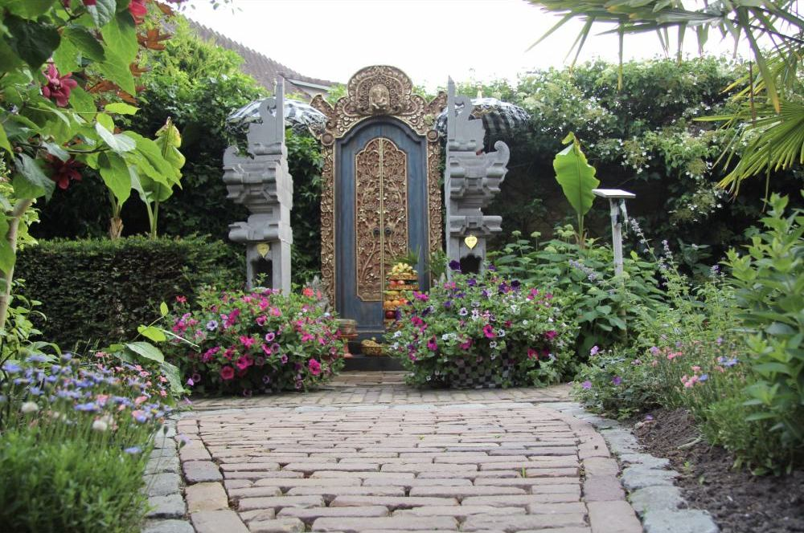
Bali in Beeld heeft het beeld waar u naar op zoek bent
Balinese tuinbeelden, Boeddha's en houtsnijwerk, rechtstreeks van het godeneiland. Te zien in onze winkel en Balinese tuin in het hart van Schijf.
Een beetje op Bali, in Schijf
In onze winkel vindt u Balinese tuinbeelden, woonaccessoires en cadeau-artikelen. Naast de winkel ligt onze tuin, ingericht met Balinese beelden, een Balinese tempel en andere elementen van het eiland. Zo ziet u meteen hoe een beeld staat tussen het groen.
Ons assortiment verandert een aantal keren per jaar, dus er is steeds weer iets nieuws te zien.
- Binnen- en buitenbeelden
- Advies over steensoorten
- Praktische tips voor een reis naar Bali
- Betalen met Tikkie
Wanneer zijn we open?
We zijn open op een aantal weekenden. De komende dagen:
- Zaterdag 21 november10:00 - 17:00
- Zaterdag 28 november10:00 - 17:00
- Zondag 29 november10:00 - 17:00
U bent ook altijd welkom op afspraak. Pinnen kan niet, betalen met Tikkie wel.
Ons assortiment
Voor binnen en buiten, in hout, brons en diverse steensoorten. Op de website ziet u een greep; in de winkel staat veel meer.
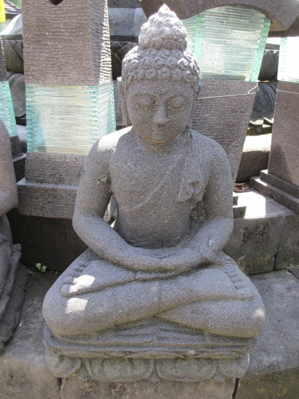
Boeddhabeelden
Een ruime sortering, voor in de tuin en in huis.
Binnen en buiten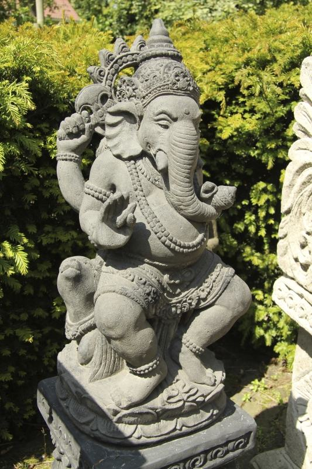
Ganesha's
In verschillende maten en steensoorten.
Buiten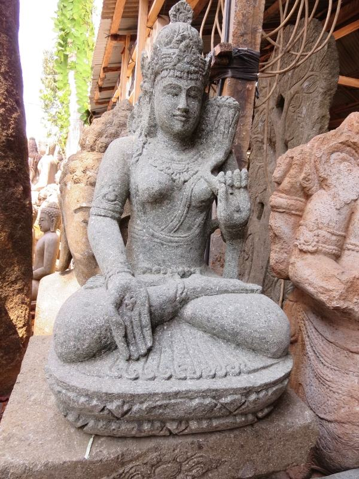
Balinese tuinbeelden
Dewi Tara, Dewi Sri, Hanuman, tempelwachters en olifanten.
Buiten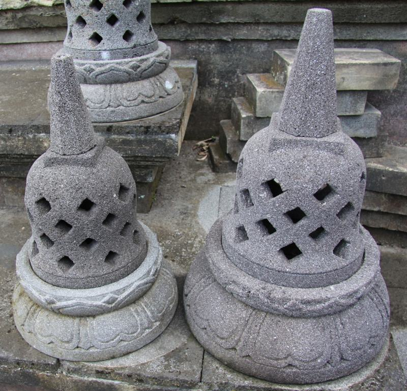
Lampjes, zuilen en potten
Pagodelampjes, zuiltjes, decoratieve potten en Balinese tempels.
Buiten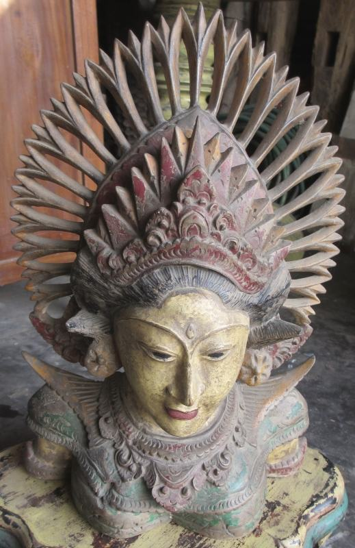
Houtsnijwerk
Fraai Balinees houtsnijwerk, van maskers tot grote beelden.
Binnen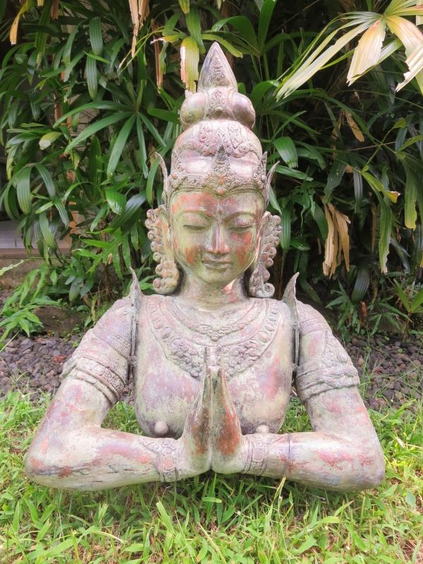
Brons
Bronzen en verzilverde beelden van Hindoeïstische goden.
BinnenLoop ook even door onze tuin
Een kleine maar sfeervolle tuin met Balinese beelden, een tempel en paviljoens. Het mooist van mei tot half augustus, als alles in bloei staat.
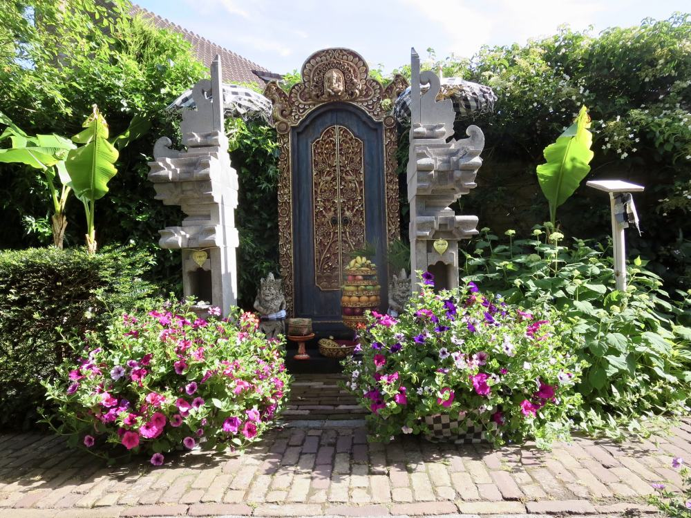
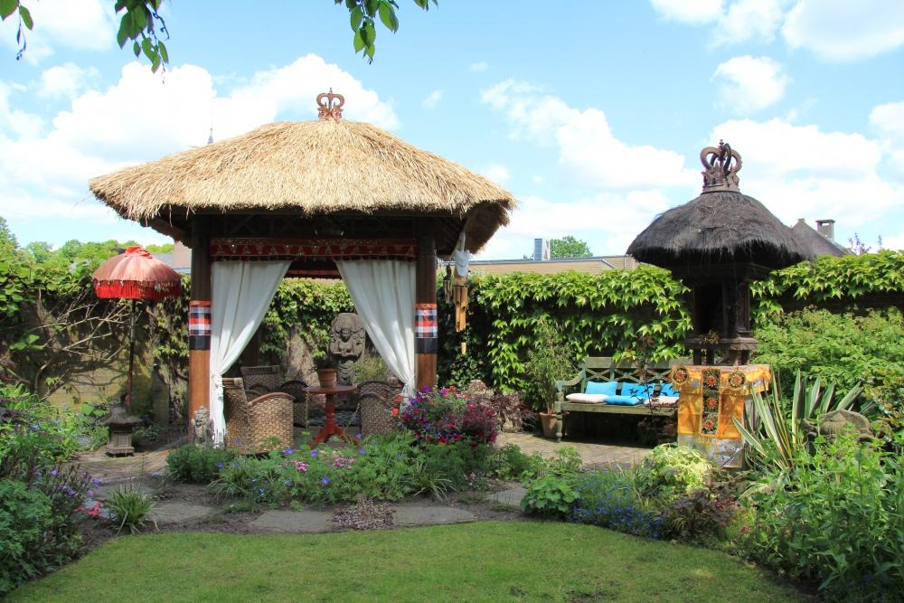
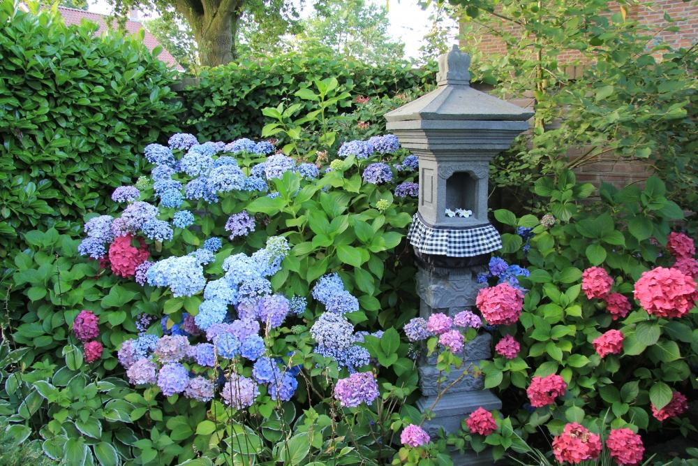
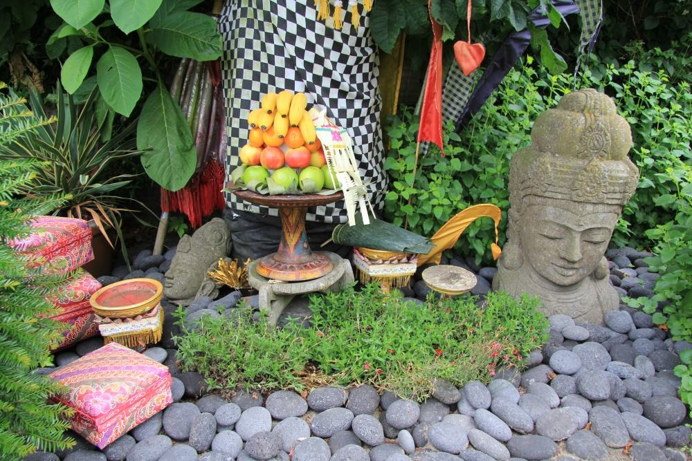
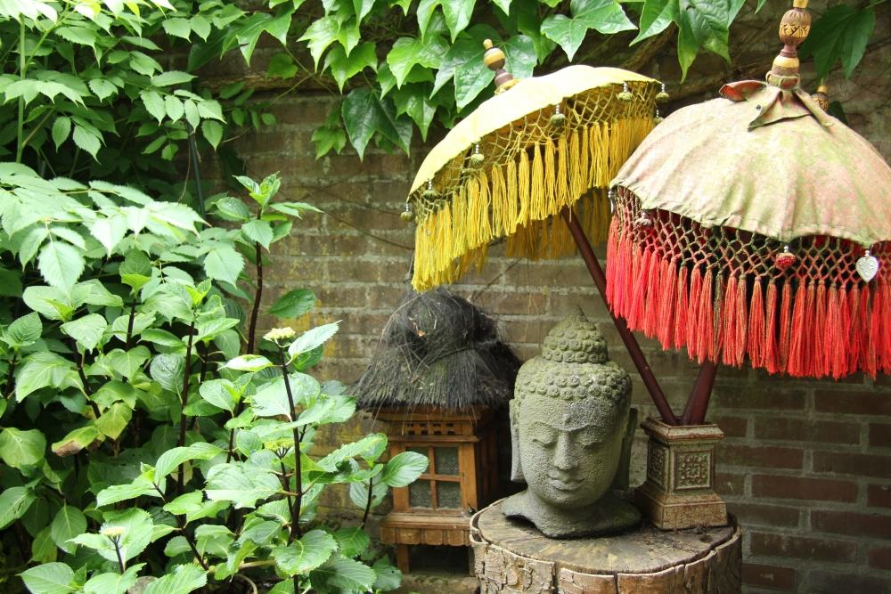
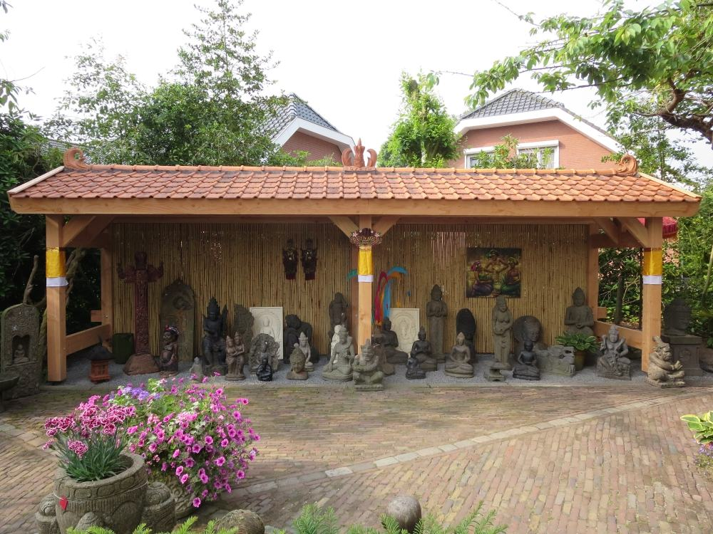
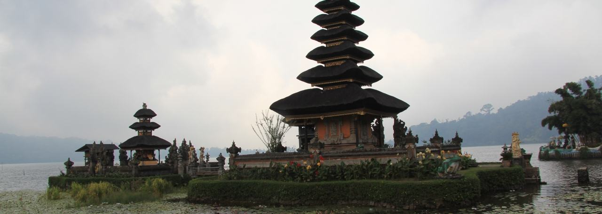
Op zoek naar iets speciaals?
Zoekt u iets specifieks uit Bali? Op onze reizen naar Bali gaan we er voor u naar op zoek.
- Vertel wat u zoektStuur ons een bericht met wat u in gedachten heeft.
- Foto en prijsopgaveHebben we het gevonden, dan sturen we een foto en een prijs inclusief btw en verzendkosten.
- Ophalen in SchijfNa een aanbetaling van 20% laten we het overkomen. Is het in Nederland, dan krijgt u bericht.
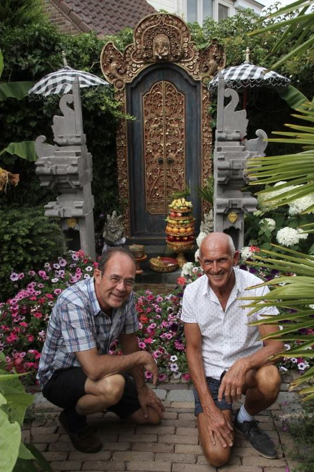
Over Bart & Robert
"Kortom, Azië zit ons in het bloed."
In 1993 reisden we voor het eerst naar Azië, en sindsdien zijn we eigenlijk alleen nog maar daar op vakantie geweest. Onze passie voor Azië, en vooral voor Bali, is uitgegroeid tot Bali in Beeld. Wat als hobby begon, is nu een winkel met een eigen Balinese tuin.
Gaat u binnenkort naar Bali? Stel uw vragen gerust, we geven u graag praktische tips.
Neem contact op
Een vraag over een beeld, een afspraak buiten de openingsdagen of tips voor uw reis naar Bali? Stuur ons gerust een bericht.
Bel of app ons
Bart en Robert helpen u graag verder.
In de kern van Schijf, 50 meter van restaurant Kir Royal.